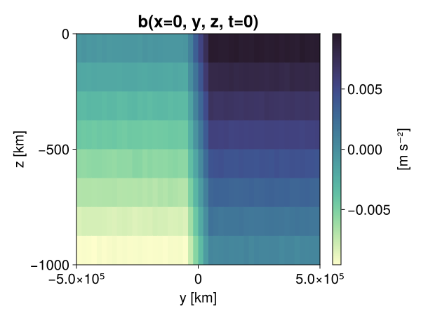
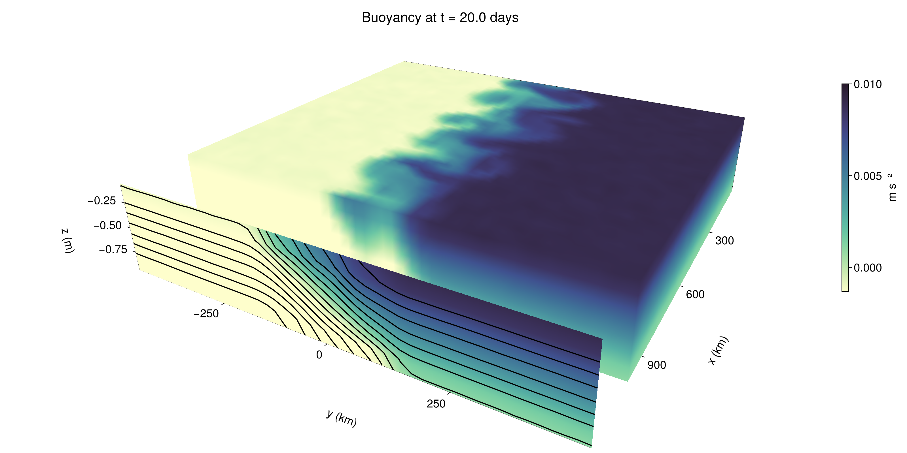

Baroclinic adjustment
In this example, we simulate the evolution and equilibration of a baroclinically unstable front.
Install dependencies
First let's make sure we have all required packages installed.
using Pkg
pkg"add Oceananigans, CairoMakie"using Oceananigans
using Oceananigans.UnitsGrid
We use a three-dimensional channel that is periodic in the x direction:
Lx = 1000kilometers # east-west extent [m]
Ly = 1000kilometers # north-south extent [m]
Lz = 1kilometers # depth [m]
grid = RectilinearGrid(size = (48, 48, 8),
x = (0, Lx),
y = (-Ly/2, Ly/2),
z = (-Lz, 0),
topology = (Periodic, Bounded, Bounded))48×48×8 RectilinearGrid{Float64, Periodic, Bounded, Bounded} on CPU with 3×3×3 halo
├── Periodic x ∈ [0.0, 1.0e6) regularly spaced with Δx=20833.3
├── Bounded y ∈ [-500000.0, 500000.0] regularly spaced with Δy=20833.3
└── Bounded z ∈ [-1000.0, 0.0] regularly spaced with Δz=125.0Model
We built a HydrostaticFreeSurfaceModel with an ImplicitFreeSurface solver. Regarding Coriolis, we use a beta-plane centered at 45° South.
model = HydrostaticFreeSurfaceModel(; grid,
coriolis = BetaPlane(latitude = -45),
buoyancy = BuoyancyTracer(),
tracers = :b,
momentum_advection = WENO(),
tracer_advection = WENO())HydrostaticFreeSurfaceModel{CPU, RectilinearGrid}(time = 0 seconds, iteration = 0)
├── grid: 48×48×8 RectilinearGrid{Float64, Periodic, Bounded, Bounded} on CPU with 3×3×3 halo
├── timestepper: QuasiAdamsBashforth2TimeStepper
├── tracers: b
├── closure: Nothing
├── buoyancy: BuoyancyTracer with ĝ = NegativeZDirection()
├── free surface: ImplicitFreeSurface with gravitational acceleration 9.80665 m s⁻²
│ └── solver: FFTImplicitFreeSurfaceSolver
├── advection scheme:
│ ├── momentum: WENO{3, Float64, Float32}(order=5)
│ └── b: WENO{3, Float64, Float32}(order=5)
├── vertical_coordinate: ZCoordinate
└── coriolis: BetaPlane{Float64}We start our simulation from rest with a baroclinically unstable buoyancy distribution. We use ramp(y, Δy), defined below, to specify a front with width Δy and horizontal buoyancy gradient M². We impose the front on top of a vertical buoyancy gradient N² and a bit of noise.
"""
ramp(y, Δy)
Linear ramp from 0 to 1 between -Δy/2 and +Δy/2.
For example:
```
y < -Δy/2 => ramp = 0
-Δy/2 < y < -Δy/2 => ramp = y / Δy
y > Δy/2 => ramp = 1
```
"""
ramp(y, Δy) = min(max(0, y/Δy + 1/2), 1)
N² = 1e-5 # [s⁻²] buoyancy frequency / stratification
M² = 1e-7 # [s⁻²] horizontal buoyancy gradient
Δy = 100kilometers # width of the region of the front
Δb = Δy * M² # buoyancy jump associated with the front
ϵb = 1e-2 * Δb # noise amplitude
bᵢ(x, y, z) = N² * z + Δb * ramp(y, Δy) + ϵb * randn()
set!(model, b=bᵢ)Let's visualize the initial buoyancy distribution.
using CairoMakie
set_theme!(Theme(fontsize = 20))
# Build coordinates with units of kilometers
x, y, z = 1e-3 .* nodes(grid, (Center(), Center(), Center()))
b = model.tracers.b
fig, ax, hm = heatmap(view(b, 1, :, :),
colormap = :deep,
axis = (xlabel = "y [km]",
ylabel = "z [km]",
title = "b(x=0, y, z, t=0)",
titlesize = 24))
Colorbar(fig[1, 2], hm, label = "[m s⁻²]")
fig
Simulation
Now let's build a Simulation.
simulation = Simulation(model, Δt=20minutes, stop_time=20days)Simulation of HydrostaticFreeSurfaceModel{CPU, RectilinearGrid}(time = 0 seconds, iteration = 0)
├── Next time step: 20 minutes
├── run_wall_time: 0 seconds
├── run_wall_time / iteration: NaN days
├── stop_time: 20 days
├── stop_iteration: Inf
├── wall_time_limit: Inf
├── minimum_relative_step: 0.0
├── callbacks: OrderedDict with 4 entries:
│ ├── stop_time_exceeded => Callback of stop_time_exceeded on IterationInterval(1)
│ ├── stop_iteration_exceeded => Callback of stop_iteration_exceeded on IterationInterval(1)
│ ├── wall_time_limit_exceeded => Callback of wall_time_limit_exceeded on IterationInterval(1)
│ └── nan_checker => Callback of NaNChecker for u on IterationInterval(100)
└── output_writers: OrderedDict with no entriesWe add a TimeStepWizard callback to adapt the simulation's time-step,
conjure_time_step_wizard!(simulation, IterationInterval(20), cfl=0.2, max_Δt=20minutes)Also, we add a callback to print a message about how the simulation is going,
using Printf
wall_clock = Ref(time_ns())
function print_progress(sim)
u, v, w = model.velocities
progress = 100 * (time(sim) / sim.stop_time)
elapsed = (time_ns() - wall_clock[]) / 1e9
@printf("[%05.2f%%] i: %d, t: %s, wall time: %s, max(u): (%6.3e, %6.3e, %6.3e) m/s, next Δt: %s\n",
progress, iteration(sim), prettytime(sim), prettytime(elapsed),
maximum(abs, u), maximum(abs, v), maximum(abs, w), prettytime(sim.Δt))
wall_clock[] = time_ns()
return nothing
end
add_callback!(simulation, print_progress, IterationInterval(100))Diagnostics/Output
Here, we save the buoyancy, $b$, at the edges of our domain as well as the zonal ($x$) average of buoyancy.
u, v, w = model.velocities
ζ = ∂x(v) - ∂y(u)
B = Average(b, dims=1)
U = Average(u, dims=1)
V = Average(v, dims=1)
filename = "baroclinic_adjustment"
save_fields_interval = 0.5day
slicers = (east = (grid.Nx, :, :),
north = (:, grid.Ny, :),
bottom = (:, :, 1),
top = (:, :, grid.Nz))
for side in keys(slicers)
indices = slicers[side]
simulation.output_writers[side] = JLD2Writer(model, (; b, ζ);
filename = filename * "_$(side)_slice",
schedule = TimeInterval(save_fields_interval),
overwrite_existing = true,
indices)
end
simulation.output_writers[:zonal] = JLD2Writer(model, (; b=B, u=U, v=V);
filename = filename * "_zonal_average",
schedule = TimeInterval(save_fields_interval),
overwrite_existing = true)JLD2Writer scheduled on TimeInterval(12 hours):
├── filepath: baroclinic_adjustment_zonal_average.jld2
├── 3 outputs: (b, u, v)
├── array_type: Array{Float32}
├── including: [:grid, :coriolis, :buoyancy, :closure]
├── file_splitting: NoFileSplitting
└── file size: 32.6 KiBNow we're ready to run.
@info "Running the simulation..."
run!(simulation)
@info "Simulation completed in " * prettytime(simulation.run_wall_time)[ Info: Running the simulation...
[ Info: Initializing simulation...
[00.00%] i: 0, t: 0 seconds, wall time: 28.649 seconds, max(u): (0.000e+00, 0.000e+00, 0.000e+00) m/s, next Δt: 20 minutes
[ Info: ... simulation initialization complete (8.620 seconds)
[ Info: Executing initial time step...
[ Info: ... initial time step complete (2.898 seconds).
[06.94%] i: 100, t: 1.389 days, wall time: 7.560 seconds, max(u): (1.333e-01, 1.236e-01, 1.509e-03) m/s, next Δt: 20 minutes
[13.89%] i: 200, t: 2.778 days, wall time: 780.719 ms, max(u): (2.175e-01, 1.777e-01, 1.691e-03) m/s, next Δt: 20 minutes
[20.83%] i: 300, t: 4.167 days, wall time: 811.699 ms, max(u): (2.870e-01, 2.187e-01, 1.651e-03) m/s, next Δt: 20 minutes
[27.78%] i: 400, t: 5.556 days, wall time: 766.455 ms, max(u): (3.426e-01, 2.836e-01, 1.578e-03) m/s, next Δt: 20 minutes
[34.72%] i: 500, t: 6.944 days, wall time: 795.209 ms, max(u): (4.054e-01, 4.329e-01, 1.856e-03) m/s, next Δt: 20 minutes
[41.67%] i: 600, t: 8.333 days, wall time: 769.310 ms, max(u): (5.240e-01, 5.695e-01, 2.196e-03) m/s, next Δt: 20 minutes
[48.61%] i: 700, t: 9.722 days, wall time: 783.282 ms, max(u): (7.457e-01, 8.507e-01, 3.084e-03) m/s, next Δt: 20 minutes
[55.56%] i: 800, t: 11.111 days, wall time: 1.190 seconds, max(u): (1.075e+00, 1.188e+00, 3.724e-03) m/s, next Δt: 20 minutes
[62.50%] i: 900, t: 12.500 days, wall time: 755.969 ms, max(u): (1.265e+00, 1.125e+00, 4.589e-03) m/s, next Δt: 20 minutes
[69.44%] i: 1000, t: 13.889 days, wall time: 776.656 ms, max(u): (1.373e+00, 1.172e+00, 4.819e-03) m/s, next Δt: 20 minutes
[76.39%] i: 1100, t: 15.278 days, wall time: 762.988 ms, max(u): (1.391e+00, 9.607e-01, 5.260e-03) m/s, next Δt: 20 minutes
[83.33%] i: 1200, t: 16.667 days, wall time: 756.538 ms, max(u): (1.452e+00, 9.344e-01, 3.432e-03) m/s, next Δt: 20 minutes
[90.28%] i: 1300, t: 18.056 days, wall time: 794.759 ms, max(u): (1.473e+00, 9.514e-01, 2.471e-03) m/s, next Δt: 20 minutes
[97.22%] i: 1400, t: 19.444 days, wall time: 759.661 ms, max(u): (1.249e+00, 1.107e+00, 2.407e-03) m/s, next Δt: 20 minutes
[ Info: Simulation is stopping after running for 23.092 seconds.
[ Info: Simulation time 20 days equals or exceeds stop time 20 days.
[ Info: Simulation completed in 23.111 seconds
Visualization
All that's left is to make a pretty movie. Actually, we make two visualizations here. First, we illustrate how to make a 3D visualization with Makie's Axis3 and Makie.surface. Then we make a movie in 2D. We use CairoMakie in this example, but note that using GLMakie is more convenient on a system with OpenGL, as figures will be displayed on the screen.
using CairoMakieThree-dimensional visualization
We load the saved buoyancy output on the top, north, and east surface as FieldTimeSerieses.
filename = "baroclinic_adjustment"
sides = keys(slicers)
slice_filenames = NamedTuple(side => filename * "_$(side)_slice.jld2" for side in sides)
b_timeserieses = (east = FieldTimeSeries(slice_filenames.east, "b"),
north = FieldTimeSeries(slice_filenames.north, "b"),
top = FieldTimeSeries(slice_filenames.top, "b"))
B_timeseries = FieldTimeSeries(filename * "_zonal_average.jld2", "b")
times = B_timeseries.times
grid = B_timeseries.grid48×48×8 RectilinearGrid{Float64, Periodic, Bounded, Bounded} on CPU with 3×3×3 halo
├── Periodic x ∈ [0.0, 1.0e6) regularly spaced with Δx=20833.3
├── Bounded y ∈ [-500000.0, 500000.0] regularly spaced with Δy=20833.3
└── Bounded z ∈ [-1000.0, 0.0] regularly spaced with Δz=125.0We build the coordinates. We rescale horizontal coordinates to kilometers.
xb, yb, zb = nodes(b_timeserieses.east)
xb = xb ./ 1e3 # convert m -> km
yb = yb ./ 1e3 # convert m -> km
Nx, Ny, Nz = size(grid)
x_xz = repeat(x, 1, Nz)
y_xz_north = y[end] * ones(Nx, Nz)
z_xz = repeat(reshape(z, 1, Nz), Nx, 1)
x_yz_east = x[end] * ones(Ny, Nz)
y_yz = repeat(y, 1, Nz)
z_yz = repeat(reshape(z, 1, Nz), grid.Ny, 1)
x_xy = x
y_xy = y
z_xy_top = z[end] * ones(grid.Nx, grid.Ny)Then we create a 3D axis. We use zonal_slice_displacement to control where the plot of the instantaneous zonal average flow is located.
fig = Figure(size = (1600, 800))
zonal_slice_displacement = 1.2
ax = Axis3(fig[2, 1],
aspect=(1, 1, 1/5),
xlabel = "x (km)",
ylabel = "y (km)",
zlabel = "z (m)",
xlabeloffset = 100,
ylabeloffset = 100,
zlabeloffset = 100,
limits = ((x[1], zonal_slice_displacement * x[end]), (y[1], y[end]), (z[1], z[end])),
elevation = 0.45,
azimuth = 6.8,
xspinesvisible = false,
zgridvisible = false,
protrusions = 40,
perspectiveness = 0.7)Axis3()We use data from the final savepoint for the 3D plot. Note that this plot can easily be animated by using Makie's Observable. To dive into Observables, check out Makie.jl's Documentation.
n = length(times)41Now let's make a 3D plot of the buoyancy and in front of it we'll use the zonally-averaged output to plot the instantaneous zonal-average of the buoyancy.
b_slices = (east = interior(b_timeserieses.east[n], 1, :, :),
north = interior(b_timeserieses.north[n], :, 1, :),
top = interior(b_timeserieses.top[n], :, :, 1))
# Zonally-averaged buoyancy
B = interior(B_timeseries[n], 1, :, :)
clims = 1.1 .* extrema(b_timeserieses.top[n][:])
kwargs = (colorrange=clims, colormap=:deep, shading=NoShading)
surface!(ax, x_yz_east, y_yz, z_yz; color = b_slices.east, kwargs...)
surface!(ax, x_xz, y_xz_north, z_xz; color = b_slices.north, kwargs...)
surface!(ax, x_xy, y_xy, z_xy_top; color = b_slices.top, kwargs...)
sf = surface!(ax, zonal_slice_displacement .* x_yz_east, y_yz, z_yz; color = B, kwargs...)
contour!(ax, y, z, B; transformation = (:yz, zonal_slice_displacement * x[end]),
levels = 15, linewidth = 2, color = :black)
Colorbar(fig[2, 2], sf, label = "m s⁻²", height = Relative(0.4), tellheight=false)
title = "Buoyancy at t = " * string(round(times[n] / day, digits=1)) * " days"
fig[1, 1:2] = Label(fig, title; fontsize = 24, tellwidth = false, padding = (0, 0, -120, 0))
rowgap!(fig.layout, 1, Relative(-0.2))
colgap!(fig.layout, 1, Relative(-0.1))
save("baroclinic_adjustment_3d.png", fig)
Two-dimensional movie
We make a 2D movie that shows buoyancy $b$ and vertical vorticity $ζ$ at the surface, as well as the zonally-averaged zonal and meridional velocities $U$ and $V$ in the $(y, z)$ plane. First we load the FieldTimeSeries and extract the additional coordinates we'll need for plotting
ζ_timeseries = FieldTimeSeries(slice_filenames.top, "ζ")
U_timeseries = FieldTimeSeries(filename * "_zonal_average.jld2", "u")
B_timeseries = FieldTimeSeries(filename * "_zonal_average.jld2", "b")
V_timeseries = FieldTimeSeries(filename * "_zonal_average.jld2", "v")
xζ, yζ, zζ = nodes(ζ_timeseries)
yv = ynodes(V_timeseries)
xζ = xζ ./ 1e3 # convert m -> km
yζ = yζ ./ 1e3 # convert m -> km
yv = yv ./ 1e3 # convert m -> km-500.0:20.833333333333332:500.0Next, we set up a plot with 4 panels. The top panels are large and square, while the bottom panels get a reduced aspect ratio through rowsize!.
fig = Figure(size=(1800, 1000))
axb = Axis(fig[1, 2], xlabel="x (km)", ylabel="y (km)", aspect=1)
axζ = Axis(fig[1, 3], xlabel="x (km)", ylabel="y (km)", aspect=1, yaxisposition=:right)
axu = Axis(fig[2, 2], xlabel="y (km)", ylabel="z (m)")
axv = Axis(fig[2, 3], xlabel="y (km)", ylabel="z (m)", yaxisposition=:right)
rowsize!(fig.layout, 2, Relative(0.3))To prepare a plot for animation, we index the timeseries with an Observable,
n = Observable(1)
b_top = @lift interior(b_timeserieses.top[$n], :, :, 1)
ζ_top = @lift interior(ζ_timeseries[$n], :, :, 1)
U = @lift interior(U_timeseries[$n], 1, :, :)
V = @lift interior(V_timeseries[$n], 1, :, :)
B = @lift interior(B_timeseries[$n], 1, :, :)Observable([-0.009382092393934727 -0.008130822330713272 -0.006895011756569147 -0.0056732092052698135 -0.0043572187423706055 -0.0031430807430297136 -0.0018634381704032421 -0.0006399470730684698; -0.009378090500831604 -0.0081317238509655 -0.006889122538268566 -0.005604644306004047 -0.004388481844216585 -0.003122862195596099 -0.0018620033515617251 -0.0006072029937058687; -0.009363123215734959 -0.008134482428431511 -0.006866468582302332 -0.0056351120583713055 -0.004384603817015886 -0.0031115880701690912 -0.0018702305387705564 -0.0006071118405088782; -0.00938210729509592 -0.008109196089208126 -0.006884423550218344 -0.005611063912510872 -0.0043588196858763695 -0.0031352094374597073 -0.0018742976244539022 -0.0006259900983422995; -0.009381942451000214 -0.008134661242365837 -0.006889529526233673 -0.005637029651552439 -0.004375502001494169 -0.0031260037794709206 -0.0018790188478305936 -0.0006284146220423281; -0.009369715116918087 -0.008108813315629959 -0.0068584405817091465 -0.005635835230350494 -0.004414153750985861 -0.0031346562318503857 -0.0018654034938663244 -0.0006249416619539261; -0.009398072957992554 -0.008092819713056087 -0.006892255507409573 -0.005627220030874014 -0.004381983540952206 -0.003118848893791437 -0.0018842372810468078 -0.000651752867270261; -0.009372711181640625 -0.00811745971441269 -0.006856092717498541 -0.005649268161505461 -0.004362612962722778 -0.003128561656922102 -0.0018692391458898783 -0.0006156101590022445; -0.009358583949506283 -0.008116070181131363 -0.006887985859066248 -0.005616527982056141 -0.004386201035231352 -0.0031395768746733665 -0.0018385353032499552 -0.0006238006171770394; -0.009392415173351765 -0.00813023466616869 -0.006879305001348257 -0.005630919244140387 -0.004375252407044172 -0.003122100606560707 -0.0018619443289935589 -0.0006794469081796706; -0.009380550123751163 -0.00811948161572218 -0.0068900627084076405 -0.005602502264082432 -0.004397647920995951 -0.0031229928135871887 -0.0018736689817160368 -0.0006267688004299998; -0.009355738759040833 -0.00814048107713461 -0.006875400431454182 -0.0055999369360506535 -0.004380535800009966 -0.0031200412195175886 -0.0018815422663465142 -0.00065546267433092; -0.009362451732158661 -0.00814132858067751 -0.006883684080094099 -0.005611484870314598 -0.004365586210042238 -0.0031335074454545975 -0.001871368265710771 -0.0005971781793050468; -0.009359766729176044 -0.008130759000778198 -0.006884683854877949 -0.005639089737087488 -0.004366711247712374 -0.003115257015451789 -0.001868126098997891 -0.0006429764907807112; -0.009367678314447403 -0.00814069714397192 -0.006867493502795696 -0.005610284395515919 -0.004372595343738794 -0.0031539606861770153 -0.0018997697625309229 -0.0006261683884076774; -0.009377622045576572 -0.008104365319013596 -0.006886130664497614 -0.0056146904826164246 -0.004374235402792692 -0.003094513900578022 -0.0018552581313997507 -0.0006111600669100881; -0.009351914748549461 -0.008134598843753338 -0.006872508209198713 -0.005613659042865038 -0.004387977067381144 -0.0031327081378549337 -0.0018300819210708141 -0.0006286003044806421; -0.009380540810525417 -0.008105248212814331 -0.006871682591736317 -0.00564291886985302 -0.004369009286165237 -0.0031083475332707167 -0.0018740866798907518 -0.000608251488301903; -0.009382189251482487 -0.008134894073009491 -0.006861483678221703 -0.0056035397574305534 -0.004355290438979864 -0.003114983905106783 -0.0019004017813131213 -0.0006071196985431015; -0.009374754503369331 -0.008138375356793404 -0.006868389900773764 -0.005636068992316723 -0.004371513146907091 -0.0031119976192712784 -0.0018701076041907072 -0.000598571787122637; -0.009369079023599625 -0.00809363555163145 -0.0068862177431583405 -0.005641197320073843 -0.004351890180259943 -0.003147219540551305 -0.001891603460535407 -0.0006068593938834965; -0.009402534924447536 -0.008166210725903511 -0.0068726688623428345 -0.0056398664601147175 -0.00437066750600934 -0.003133862279355526 -0.0018833513604477048 -0.0006270107696764171; -0.0075049796141684055 -0.006275603547692299 -0.004977595992386341 -0.003769858041778207 -0.002499656518921256 -0.0012392278295010328 2.3015463739284314e-5 0.0012723468244075775; -0.005400919355452061 -0.004183459561318159 -0.0029286190401762724 -0.0016664568101987243 -0.00040949220419861376 0.0008295386214740574 0.0020902291871607304 0.003336062654852867; -0.003349618287757039 -0.0020712807308882475 -0.0008482130360789597 0.0004413748683873564 0.0016736519755795598 0.0029092393815517426 0.004205780103802681 0.0054266126826405525; -0.0012437819968909025 -2.8420672606443986e-6 0.0012776877265423536 0.0024916697293519974 0.003729302203282714 0.005005847197026014 0.006242891773581505 0.007473673205822706; 0.0006288557196967304 0.0018847109749913216 0.003092013532295823 0.004396799020469189 0.005640341434627771 0.006895675789564848 0.008134120143949986 0.009390834718942642; 0.0006231407169252634 0.0018739777151495218 0.0031337833497673273 0.004374365787953138 0.0056127035059034824 0.006856556516140699 0.008131681941449642 0.009392848238348961; 0.00059990567388013 0.0019005934009328485 0.0031352618243545294 0.0043770140036940575 0.005634535104036331 0.006873077712953091 0.008128906600177288 0.009381061419844627; 0.0006295826751738787 0.0018428538460284472 0.0031601949594914913 0.0043710279278457165 0.005613421089947224 0.006887280847877264 0.008124635554850101 0.009346128441393375; 0.0006334203062579036 0.0018475694814696908 0.0031142483931034803 0.004370944574475288 0.005616236012428999 0.0068560196086764336 0.008121835999190807 0.009366168640553951; 0.000620522943791002 0.001882936805486679 0.0031192684546113014 0.004361177794635296 0.005620941519737244 0.00688975490629673 0.008141627535223961 0.009376630187034607; 0.0006383522995747626 0.0018718785140663385 0.003120889188721776 0.004354081582278013 0.00561158312484622 0.0068683987483382225 0.008131327107548714 0.00938642118126154; 0.0006108597735874355 0.0018897870322689414 0.003126442665234208 0.004373928532004356 0.00563812255859375 0.006865101866424084 0.00812262948602438 0.009353975765407085; 0.0005887193838134408 0.0018714367179200053 0.003129037329927087 0.004363801330327988 0.005625887308269739 0.006892058532685041 0.008127800188958645 0.009374628774821758; 0.0006301503744907677 0.0018576839938759804 0.003142072819173336 0.0043639629147946835 0.005619755946099758 0.006889409851282835 0.008157338947057724 0.009393042884767056; 0.0006140941404737532 0.0018738206708803773 0.003124234266579151 0.004369033500552177 0.005612165201455355 0.006853068247437477 0.008123769424855709 0.009390458464622498; 0.0006255450425669551 0.0018514415714889765 0.0031390702351927757 0.004375728312879801 0.0056358762085437775 0.006858574226498604 0.008113661780953407 0.009392503648996353; 0.0006413014489226043 0.0018848659237846732 0.0031155755277723074 0.004386170767247677 0.0055962554179131985 0.006886648014187813 0.008108182810246944 0.009370002895593643; 0.0006162075442261994 0.0018544031772762537 0.003116859123110771 0.004380661062896252 0.005637416150420904 0.006866923999041319 0.008144800551235676 0.009379491209983826; 0.0006391340284608305 0.0018515620613470674 0.003138521919026971 0.0043718512170016766 0.005651277024298906 0.006874751765280962 0.008116369135677814 0.009360634721815586; 0.0006423952872864902 0.0018673341255635023 0.0031425971537828445 0.004361319355666637 0.005619537550956011 0.0068894438445568085 0.008108356036245823 0.009378374554216862; 0.0006196341710165143 0.0019041021587327123 0.0031204125843942165 0.004402426071465015 0.005618775729089975 0.006889169570058584 0.008138474076986313 0.009370352141559124; 0.0006162332138046622 0.0018743849359452724 0.0031237886287271976 0.004367011599242687 0.0056306347250938416 0.00687827542424202 0.008142795413732529 0.00935056060552597; 0.0006603212095797062 0.001841988880187273 0.0031287369783967733 0.004388137720525265 0.005595880094915628 0.006876635830849409 0.008129811845719814 0.009379278868436813; 0.0006208730046637356 0.0018824328435584903 0.0031172558665275574 0.0043735201470553875 0.005637916270643473 0.00687746237963438 0.008137505501508713 0.009391847997903824; 0.0006467472412623465 0.0018701176159083843 0.0031175147742033005 0.0043886457569897175 0.005614862777292728 0.006854059174656868 0.008152727968990803 0.009364202618598938; 0.0006309206946752965 0.001854137983173132 0.0031270801555365324 0.004380052909255028 0.005633125081658363 0.006862340960651636 0.008133422583341599 0.00937839224934578])
and then build our plot:
hm = heatmap!(axb, xb, yb, b_top, colorrange=(0, Δb), colormap=:thermal)
Colorbar(fig[1, 1], hm, flipaxis=false, label="Surface b(x, y) (m s⁻²)")
hm = heatmap!(axζ, xζ, yζ, ζ_top, colorrange=(-5e-5, 5e-5), colormap=:balance)
Colorbar(fig[1, 4], hm, label="Surface ζ(x, y) (s⁻¹)")
hm = heatmap!(axu, yb, zb, U; colorrange=(-5e-1, 5e-1), colormap=:balance)
Colorbar(fig[2, 1], hm, flipaxis=false, label="Zonally-averaged U(y, z) (m s⁻¹)")
contour!(axu, yb, zb, B; levels=15, color=:black)
hm = heatmap!(axv, yv, zb, V; colorrange=(-1e-1, 1e-1), colormap=:balance)
Colorbar(fig[2, 4], hm, label="Zonally-averaged V(y, z) (m s⁻¹)")
contour!(axv, yb, zb, B; levels=15, color=:black)Finally, we're ready to record the movie.
frames = 1:length(times)
record(fig, filename * ".mp4", frames, framerate=8) do i
n[] = i
endThis page was generated using Literate.jl.